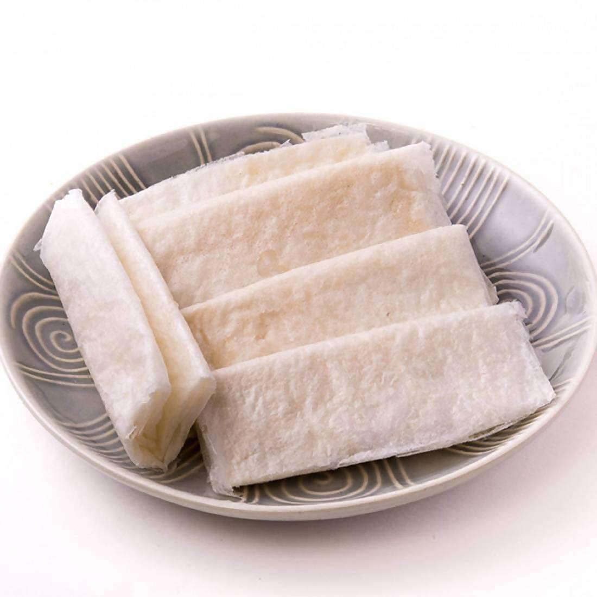

SOUTH ZONE
Telangana: Biryani
Biryani more famously the Hyderabadi version, is prepared in the form of kachay gosht ki Biryani and dum ki Biryani. This all time classic needs no explanation.
Tamil Nadu: Pongal

Vegetarian Pongal is a rice lentil dish that is often prepared in south Indian homes as an offering to the goddess. But it is also a comfort food that is very easy to digest.
Adhra Pradesh: Pootharekulu
Pootharekulu literally means coated sheets of sugar preparation. They are made by making thin wrappers prepared from rice flour, pure ghee and lots of powdered sugar.
Kerala: Appam

Appam is a type of pancake made with fermented rice batter and coconut milk. The origin of Appam is disputed and potential sources of origin might be Sri Lanka or the southern tip of India. It is a common food in Sri Lanka and the Indian state of Kerala where it is eaten most frequently for breakfast or dinner.
Karnataka: Bisi Bele Bath
Bisi Bele Bath is a dish in which the sambar dal and rice are cooked together with tamarind and spice powders.